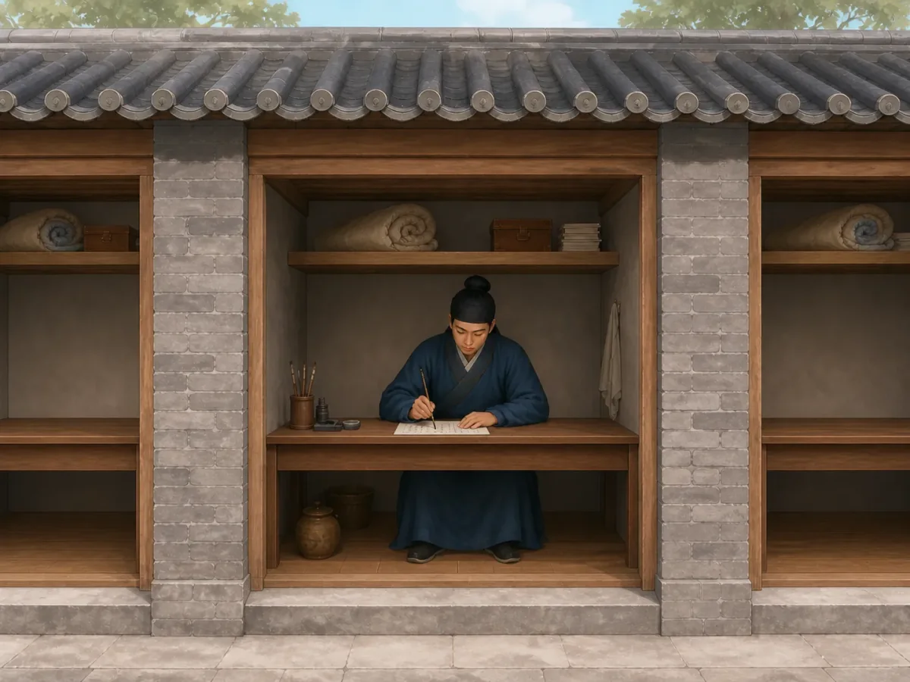

科举考试：一张考卷能带你走多远？
The Imperial Examination: How Far Could a Test Take You?
Page 1
一间很小的房子，一场很大的考试
A Tiny Room and a Very Big Exam

A candidate works on his exam inside an examination cell.
一条长长的巷子两边，排着一间又一间窄窄的小屋。每间里面坐着一个考生，身边放着笔墨、食物和准备答题的卷纸。这里就是古代的gòngyuàn · 古代举行科举考试的专门考场。。
到了Míng-Qīng shíqī · 从明朝建立到清朝结束的历史时期，大致为1368年至1912年。，参加xiāngshì · 明清科举中在各省举行的重要考试，考中者称举人。的考生要在这样的“hàoshè · 贡院里供考生答题、休息的狭小隔间。”里度过很长的考试时间。小屋里面通常只有两块木板，白天一块当桌子、一块当凳子，晚上还可以拼起来睡觉。故宫保存的一幅明代《考试图》里，就能看到一排排号舍和在巷道里巡查的监考人员。
坐在里面的人，面前只有一张考卷。可是，这张纸可能关系到他以后能走多远。考过这一场，并不会第二天就变成大官。它只是打开下一道门。再考过一层，还可以继续往前。最后，一些人能够考中jìnshì · 科举最高层级考试中取得的功名，常成为进入仕途的重要起点。，真正走上做官的道路。
不过，中国古代并不是一开始就这样选官的。
Rows of narrow little rooms stretch along a long lane. In each one sits a candidate with his writing tools, food, and examination papers. This is a gòngyuàn · 贡院 · A compound built for holding imperial examinations., an imperial examination compound.
During the Míng-Qīng shíqī · 明清时期 · The period spanning the Ming and Qing dynasties, from 1368 to 1912., candidates taking the xiāngshì · 乡试 · A major Ming and Qing examination held at the provincial level. spent long hours—and nights—inside these small hàoshè · 号舍 · Narrow compartments in an examination compound where candidates wrote and rested.. Two wooden boards could serve as a desk and seat during the day and be moved together for sleeping. A Ming painting of an examination hall shows the cells lined up in orderly rows, with guards watching the lanes between them.
For the man sitting inside, the paper in front of him mattered enormously. Passing this exam would not make him a high official the next morning. It would open the next stage. Pass again, and another door opened. At the highest levels, successful candidates could eventually earn the prestigious jìnshì · 进士 · A prestigious degree earned through the highest levels of the imperial examination system. and begin a government career.
But China had not always chosen officials this way.
Page 2
没有科举的时候，官员怎么选？
Before the Exam Hall

A local official pauses to observe the community; under a recommendation system, a capable person first had to be noticed.
一个国家总要有人收税、记账、审案、传递命令、管理军队。最早的时候，这些人从哪里来？
有些重要位置和家族、身份关系很密切，君主也会直接任命自己信任的人。到了Hàn cháo · 从公元前206年延续到公元220年的中国重要朝代。，朝廷还使用“chájǔ · 汉代等时期由地方官考察并向朝廷推荐人才的选官方式。”等办法，让地方官在自己管理的地区寻找合适的人，再推荐给中央。
这时候，一个人除了要有本事，还得先被人看见。问题也就来了：如果地方官根本没有注意到你呢？如果另一户人家名气更大呢？推荐可以找到人才，可是能不能被推荐，很大程度上取决于负责推荐的人。
后来，中国历代政府慢慢发展出另一种办法：能不能让想做官的人坐下来答题，用写出来的东西比较？
Long before large examination compounds existed, rulers still needed people to collect taxes, keep records, judge cases, carry messages, and manage armies. How did they find them?
Sometimes family background mattered greatly. Sometimes rulers appointed people they trusted. During the Hàn cháo · 汉朝 · A major Chinese dynasty that lasted from 206 BCE to 220 CE., local officials were also asked to recommend men known for learning, good conduct, or useful ability.
A talented person first had to be noticed. That created an obvious difficulty. What if the local official never noticed you? What if another family was better known? A recommendation could help the government find a good candidate, but it depended heavily on the people doing the recommending.
Over the centuries, Chinese governments kept experimenting with another idea: What if candidates had to show what they knew by writing answers?
Page 3
让考卷来说话
Let the Writing Matter
到了Suí-Táng shíqī · 隋朝与唐朝延续的时期，大致为581年至907年。，考试越来越成为选官的一条正式道路。唐代最让许多读书人向往的考试之一，就是进士科。
考试内容并不是一直完全一样。有时要考儒家经典，有时要回答国家遇到的问题，后来进士考试还很重视诗文等写作能力。
这带来了一个很重要的变化。一个人的家世和名声当然没有一下子消失。唐代读书人仍然需要教育，也会想办法让自己的文章和名声被别人知道。可是，朝廷现在又多了一样可以比较的东西：考生写出来的答案。
到了宋代，人们甚至开始想办法，让考官尽量不知道答案是谁写的。
During the Suí-Táng shíqī · 隋唐时期 · The period of the Sui and Tang dynasties, lasting from 581 to 907., examinations became a more regular route into government service. One of the most desired categories was the jìnshì examination.
The questions changed over time. Candidates might be asked about the Confucian classics, government problems, or how they would respond to an issue facing the state. Tang examinations also came to value literary writing such as poetry and other compositions.
This was something new and important. A candidate's family and reputation had not suddenly stopped mattering. Tang candidates still needed education, and personal reputation could help them. But now there was another thing the government could compare: their written work.
Then the Song dynasty took that idea even farther.
Page 4
把名字藏起来
Hide the Name
如果考官一拿到卷子，就看见一个熟悉的名字，会怎么样？也许这个考生来自一个很有名的家族，也许考官认识他的老师，甚至可能认得他的字迹。
Sòng cháo · 中国历史上从960年延续到1279年的朝代。科举慢慢发展出了一套很特别的办法。考生的名字可以先封起来，试卷换成编号；一些重要考试里，还会让专门的书吏把原来的答卷重新抄一遍，再送给考官。这样，连字迹都不容易把考生是谁泄露出来。办法听起来很简单：先看文章，再看名字。 可是为了做到这一点，背后的工作可一点也不简单。
中国国家博物馆保存着明代会试的“朱卷”。考生原来用黑墨写的试卷叫“墨卷”，姓名封好以后，书吏再用红笔重新誊写，变成“朱卷”，考官主要看重新抄过的那一份。
为了不让考官认出一个人的字，居然要把整篇文章重新抄一遍。
Suppose an examiner recognizes the name at the top of a paper. Perhaps the candidate comes from an important family. Perhaps the examiner knows his teacher. Perhaps he even recognizes the handwriting. How do you make the paper harder to recognize?
Sòng cháo · 宋朝 · The Chinese dynasty that lasted from 960 to 1279. examination officials developed an elaborate answer. Candidates' names could be sealed so the graders could not see them. Papers were given numbers. In important examinations, clerks even copied the answers onto fresh sheets before the graders saw them, so a familiar style of handwriting could not reveal who had written the original. The idea was simple even though the work was enormous: grade the answer, not the name.
Later dynasties continued using these methods. A Ming examination paper in the National Museum of China shows the process clearly: the candidate wrote his original paper in black ink, his name was sealed, and a clerk copied the answer in red ink before it was sent to the examiners.
Imagine doing all that copying because someone thought even handwriting might give too much away.
Page 5
一场考试，再接一场考试
One Exam Leads to Another
到了明清时期，kējǔ · 中国古代通过考试选拔官员的制度。已经变成一条很长的考试道路。读书人先要经过前面的资格考试。能够参加乡试的人，如果考中，就成为jǔrén · 明清时期通过乡试后获得的功名。。举人以后还可以到京城参加huìshì · 明清科举中举人到京城参加的中央一级考试。；会试通过以后，再参加最高一级的diànshì · 科举最高一级考试，由皇帝主持名义下决定最终名次。。
走到最后，皇帝也出现了。清代殿试由皇帝主持，读卷官先阅读试卷，把最好的卷子送给皇帝决定名次。第一甲前三名后来有三个大家非常熟悉的名字：zhuàngyuán, bǎngyǎn, tànhuā · 殿试第一甲前三名的称号，状元排在第一。。状元，就是最后排在第一名的人。
走到这里以前，一个人可能已经读了许多年书，也参加过不止一次考试。有的人第一次没有考中，过几年再来；有人一考就是很多年。所以，每次放榜的时候，那张写着名字的榜单才会让那么多人盯着看。
By the Ming and Qing dynasties, the examination road had become a long ladder. A student first had to qualify at lower levels. Those who reached the provincial examination could compete for the title of jǔrén · 举人 · A degree title earned by passing the provincial examination in the Ming and Qing periods.. Successful juren could later travel to the capital for the huìshì · 会试 · A central examination in the capital taken after the provincial level.. Pass that, and they could enter the diànshì · 殿试 · The highest examination stage, held under imperial authority to determine final ranking..
At the very end of the road stood the emperor. In the Qing dynasty, the palace examination was held under imperial authority. Officials read the papers and selected the best for the emperor to review. The top three received famous titles that are still remembered today: zhuàngyuán, bǎngyǎn, tànhuā · 状元、榜眼、探花 · The titles for the top three candidates in the first rank of the palace examination.. The first-place zhuangyuan stood at the very top of the examination list.
That final result could come after many years of reading, writing, failing, trying again, and traveling to examinations. No wonder families waited so eagerly for the names on the list.
Page 6
桌上的那张考卷
The Paper on the Desk

Young people in different clothes stand inside and outside the palace gate; the same examination road did not give everyone the same starting point.
科举当然没有让所有孩子突然站在完全一样的起点上。长期读书需要书本、老师、时间和家里的支持，而且正式的科举道路主要属于男性。可是，科举还是带来了一件很重要的变化。
一个人想进入政府，不再只能等着出生在某个家族，或者希望某位官员刚好发现自己。读了很多年书以后，他还可以走进考场，拿起毛笔，把自己学到的东西写到卷子上。
这样的考试，在中国延续了一千多年。1905年，清政府停止了科举，新的学校和教育制度开始取代过去的考试道路。贡院里一间间小小的号舍后来空了下来。可是在很长很长的时间里，一个读书人曾经带着毛笔走进去，希望自己写下的那些字，能够替他打开下一道门。
The kējǔ · 科举 · The examination system used in imperial China to select officials. never meant that every child in China had the same chance. Years of study required books, teachers, time, and family support, and the formal examination path was overwhelmingly a male world. Still, the exam changed something important.
Being born into the right family was no longer the only way the government could recognize a future official. A person who had studied for years could sit down, pick up a brush, and put his learning onto a sheet of paper.
For more than a thousand years, that idea became one of the most important parts of Chinese government and education. In 1905, the Qing government finally ended the old imperial examination system as China began building a new school system. The tiny examination cells eventually emptied. But for centuries, a candidate had entered one of them carrying a brush and hoping that the words he wrote inside would open the next door.